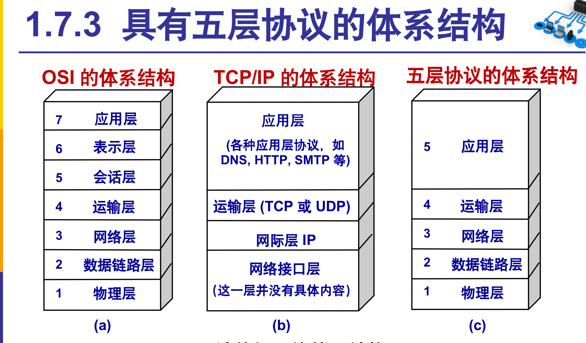

# TCP / UDP 传输层协议
概述：本文主要总结 TCP/UDP 的优缺点及其原因，与应用场景
# 在学习 TCP、UDP 之前，要先了解一下计算机网络模型（如下图）

简而言之，每层协议都是基于其下一层的。如：HTTP，FTP 等应用层协议需要提供可靠连接，所以其使用的是 TCP 协议。
# TCP / UDP 的优缺点 及 原因
| TCP 优点 | TCP 缺点 |
|---|---|
| 稳定可靠的信息传输 | 连接慢，效率低 |
| 数据包大小没有限制 | 占用系统资源高 |
| UDP 优点 | UDP 缺点 |
|---|---|
| 无连接，支持一对多，效率高 | 不可靠，不稳定，容易丢包 |
| 收发快速，无阻塞 | 数据包大小有限制 |
# TCP 优点解析
- 可靠稳定传输，是因为 TCP 在传递数据之前，会有三次握手建立连接；传递数据时，有确认、窗口、重传、拥塞控制机制，传递数据后，会断开链接来节约系统资源。
- TCP 数据包大小没有限制，是因为 IP 层会自动对传过来的 TCP 数据包进行分段，每个数据段按原来的排布顺序发送，但因为在网络中传输时可能会挑选不同的路由器，造成数据段到达的先后顺序不同。
# TCP 缺点解析
连接慢，效率低，是因为每次建立连接都需要三次握手，且每接收一个数据包都需要发送一个确认信息，数据包错误需要等待重传，丢包会还会进行拥塞控制。
# UDP 优点解析
UDP 是无连接的，因此只需要知道对方的 IP 地址就可以随时发送数据，就好像我们发邮件一样。不必像 TCP 一般，要先建立连接，对每个包都需要发送确认信息，丢包也不会进行拥塞控制。这样做的好处就是，效率高，收发快速无阻塞。
# UDP 缺点解析
UDP 是无连接的，原生的 UDP 不会关心丢包问题，这会导致无法确定接收端接收到的数据是否完整。而数据包大小有限制也是因为 UDP 是面向报文的，太长的数据包在 IP 层进行分段后，如果其中有一段数据丢包了，所有数据都将被丢弃，所以需要控制数据包的大小。
# 应用场景
# TCP 应用场景
- FTP 协议（File Transfer Protocol 文件传输协议）
- HTTP 协议（Hyper Text Transfer Protocol 超文本传输协议）
- SMTP 协议（Simple Mail Transfer Protocol 简单邮件传输协议）
- POP3 协议（Post Office Protocol - Version 3 邮局协议）
不难发现，这些协议都是需要可靠传输，不可丢包的
# UDP 应用场景
- TFTP 协议（Trivial File Transfer Protocol 简单文件传输协议）
- SNMP 协议（Simple Network Manager Protocol 简单网络管理协议）
- NFS 协议（Network File System 网络文件系统）